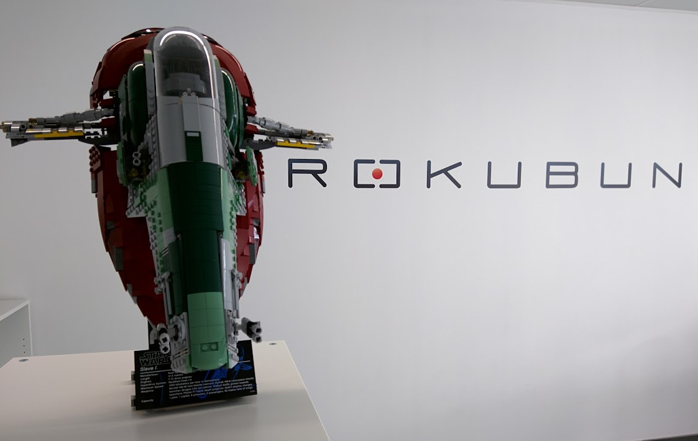
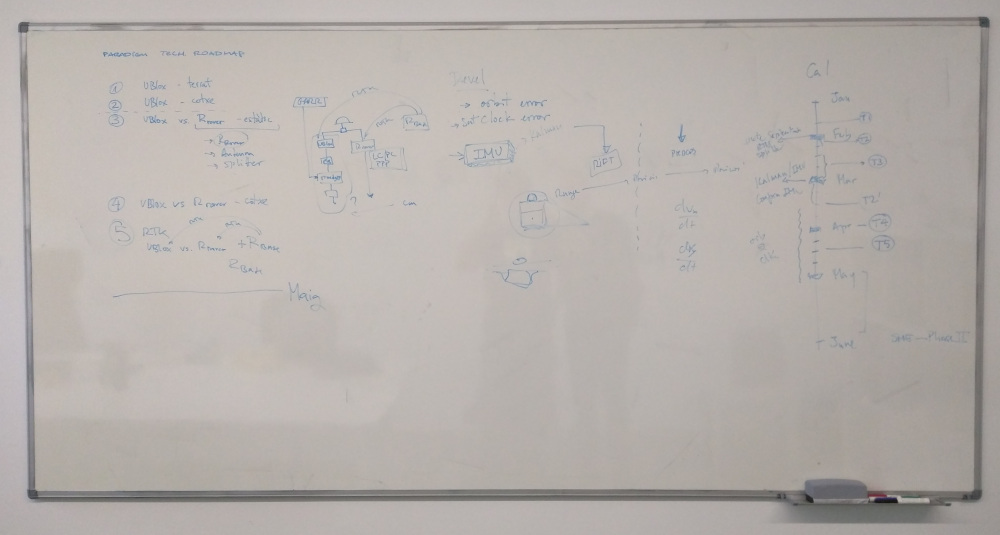

For the last ten years I’ve been Chief Technological Officer (CTO) at Rokubun, a company I co-founded and co-managed with my colleague Xavier Banque. Unfortunately, we had to take the difficult decision of shutting it down.
Drawing on my experience at Rokubun, I’d like to share some insights and some takeaways that could hopefully help other entrepreneurs at similar fields in which we operated.

What was Rokubun?
Rokubun aimed at developing navigation and positioning solutions1 with the goal of creating a product or service that could generate recursive sales. Technological innovation was an important piece in this plan, as an engine to increase the technological and scientific capital of the company ahd keep its portfolio competitve with the new developments in the navigation ecosystem.
Rokubun started as a consultancy business for satellite-based navigation technology, thus leveraging our past expertise in the field. In practice, this meant that we bid for tenders issued by the European Space Agency (ESA) and other funding vehicles. In fact, Rokubun was born as part of the ESA Business Incubation Programme that was established in Barcelona in 2015.
We sticked to this plan and along the way we created Jason, a GNSS Post Processing Kinematic service in the cloud, as well as two hardware products: the single-frequency GNSS data logger Argonaut specifically tuned for drone applications and photogrammetry, and its dual frequency evolution MEDEA GNSS computer. Despite the various market pivots that Rokubun has undergone during this journey, our plan went well up to a certain point, until it started to show some weaknesses.
Achievements
While I risk sounding boastful, I’d like to share some of Rokubun’s achievements:
- We managed to keep operations for 10 years, including a pandemic in the middle2.
- From 2 to 14 employees in 10 years with little external investment, mostly based on organic growth through revenues from contracts and grants.
- Earned a reputation within the navigation ecosystem. Professionals and colleagues in the sector know Rokubun, and I would venture to state that in a positive way: as a potential partner to be trusted. This helped us to build a strong professional network for the company to seek for contracts.
- Built a streamlined process to craft winning proposals. This included a strategy and plan to quickly seek partners and build a solid consortium for a tender/grant, generate valuable technical content that demonstrated our capabilities, and set up a methodology to ease and speed up the actual proposal writing in a collaborative way with our partners.
- Achieved a robust and company-wide software development strategy, a fundamental step to further achieve technical certifications such as ISO-26262, SOTIF, … This included a Continuous Integration and Continuous Deployment infrastructure based on Gitlab that was in the workflow of all staff. Even the ones in charge of research activities and responsibles of the company back office.
Why we had to close?
In short, the main reason has been insufficient cashflow, which did not allow us to continue with operations. But, what caused this cashflow tension? There is not a single reason, but a combination of them, both external and internal. I would probably highlight the following:
- As the famous adage says (reworded for the point in case): “Once a consultancy, always a consultancy.”. Pivoting from a consultancy model to a product-based business proved to be more complex than we initially anticipated. While organic growth was part of the strategy, it ultimately limited resources dedicated to product development compared to established companies in the sector. Attracting talent and investment for product development became difficult as we lacked significant commercial traction.
- Lack of certifications. Investing in software certification (ISO26262, SOTIF) was crucial for our long-term vision (for the type of product we wanted to develop and our target market). However, we have not been able to secure the necessary funds and time to cultivate a team mindset around achieving the certification. While initial steps were taken, achieving this goal would have required a more focused allocation of resources and a strategic team culture shift. Ultimately, this impacted our ability to access certain customers requiring specific certifications. This applied even for the process of tendering and grant preparation in various funding vehicles.
- As a Spanish company, an uphill battle to access ESA’s NAVISP3 projects that we did not manage to win. This was totally out of our control, but something that severly limited our access to funds for ESA projects in the navigation sector, specially in the last years. As you might know, these projects require the approval of ESA’s National Delegations, but despite our efforts to revert the situation, we did not manage to change our odds in accessing funds for these projects.
Things that we did right
Despite all this, I believe that Rokubun’s accomplishments can be largely attributed to the following:
- Networking as a core activity in the company. This implied participate in conferences, fairs, hackathons and workshops. It seems a rather obvious activity to do in a company, but the truth is that day-to-day activities can make you underestimate its importance. Networking will be crucial to build partnerships for consortiums, requests for quotations, find potential customers, … This brings me to the following point, volunteer!.
- We volunteered. A lot. Even if it implied some cost. Consider this cost as marketing expenses. This will help you build your brand and establish a positive reputation. Eventually, your efforts will pay off as your peers recognize your company’s ability to deliver and build trust. Some ideas: look for hackathons in your field and make yourself available to participate as mentor and, if cashflow allows, consider sponsorship. If you are on the technical side of things, volunteer to review scientific and technical journals and reach your network to inquire for opportunities to chair conference sessions. These activities can significantly increase your visibility and credibility.
- Be realistic on your odds to winning tenders, especially when you’re a small, early-stage company. Evaluators may perceive a higher risk in awarding projects to such firms. Consider partnering with larger companies to increase your chances of success.
- Reaching the big guys. We have been always very proactive when talking to technical responsibles from the big companies in our sector. Technical workshops where a great opportunity to mingle with them and let them know the company. Moreover, you can always “play the SME card”: public tenders and grants usually foster collaboration with new actors and give extra points to consortiums in which SMEs have significant presence.
- Cashflow management. As inexperienced managers as we were, specially at the beginning, one of the first (and best) decisions we took was to put in place a analytical cashflow tool. We used a simple spreadsheet for this, but we were strict and accurate on our monthly expenditure. This allowed us to make reliable predictions and properly plan ahead to estimate our runway. I know this is usual practice in company management, but it was something we were somewhat overlooking at the very beginning.
- Underpromise and overdeliver when establishing objectives and performance figures in project proposals. You will have to find a sweet spot between what is feasible and and what is attractive for the customer to get the contract. Make sure you keep in reserve those nice-to-have features that entail a higher risk (of implementation, demonstration or test). Once you have the resources within the project you will be able to develop them and give an extra value to the project outcome. Even if these features are not realized in the end, you will still be successful in the project because the expectations of all parties will be aligned.
- Compensate low salaries with perks. At Rokubun we could not pay high salaries. As a consultancy with minimal investment, we did not have the resources to pay high wages. We were aware of this, and most importantly, employees were also aware of this. Rokubun compensated this limitation with flexible working hours, more holidays, a remote work policy and (we believe) engaging projects.
- Full transparency with Rokubun’s employees. Salary scales were public for all employees, salary raise criteria and objectives were also published in our internal Wiki page so everyone was aware of them. And we always tried to provide with a quantitative update on the achievement of each objective in (more or less) regular plenary meetings.
- Four eyes see more than two. The company operated on a consensus-based model between Xavi and myself. This ensured that we considered as many possible angles and consequences of our decisions. While we initially had concerns about a potential deadlock due to our equal shareholding, this never materialized. In fact, our shared ownership encouraged open dialogue and adaptability between us, which I believe ended up as a very positive asset for the company.
- And probably the most important point: we kept a huge whiteboard to write ideas, draw or sketch. I am really going to miss it.

Some takeaways
The following is a set of some topics and points to take into account for a small technological company in the technological sector:
- Plan for project evaluation periods. Keep in mind that the resolution of grants and tenders take time. In ESA contracts (tenders) it may take a couple of months, while EUSPA and European Commission may even take a bit longer. Make sure you secure your cashflow to sustain operations during this interim period. In a similar topic, revision and approval of interim reports may take as long as 6 months in certain institutions, so make sure your cashflow can withstand these time delays.
- In ESA projects, if in two months there is no positive answer regarding a submitted proposal, it’s likely that the contract has been given to another consortium.
- I’ve learned this elsewhere, but is very true: “The disposition of a partner writing a proposal will be the disposition when executing a project”. Which means, if a partner is delayed providing contributions when preparing the proposal of the tender, expect delays when working in the project.
- Pivoting, hardware is expensive and unforgiving, mistakes are costly.
- “Sweets that can turn bitter”. One of our service providers used these words to describe public funds. Be careful with them, no matter how attractive they may seem. Make sure you are perfectly aware of all the conditions. There will be clauses in the fund agreement that will pass unnoticed. This is a fact. My practical recommendation? treat public funds as some sort of credit that needs to be returned at some point. Plan your cashflow in a way that you need to return between 10% and 20% of the amount granted. In this way you will be prepared for any possible incidentals you made during the audit process.
- Team management, if you are a CTO like myself, expect very short time spans of focused work. Avoid delegating tasks that disrupt the team’s focus: be prepared to do them yourself if need be, otherwise delays will happen. Make sure to do a good planning so that unexpected tasks can be smoothly integrated into the task pipeline of the team.
- Consultancy is seasonal as far as cash source is concerned. As soon as you get a project approved, start looking for the next opportunity. Consider also a line of credit despite its associated financial cost.
Final words
Working at Rokubun has been certainly a stimulating experience: a rollercoaster. It has been a a source of worries some times but a constant flow of learning experiences and I value, in particular, the social aspect of this adventure: the people I met and the pleasure to work side-by-side with very talented professionals.
AI usage in this post
While I did use Gemini to polish some parts of the text (mostly style corrections and English typos), this post has been ideated, organized and written by me.
Footnotes
Are you familiar with satellite navigation systems (GNSS) such as GPS or Galileo?↩︎
This was in part due to the nature of our work, that allowed us to temporarily move our operations to a fully remote approach. However, while I appreciate the flexibility of remote work, I still believe that face-to-face meetings and discussions are essential for effective collaboration, specially with more junior profiles. This applies even for software development tasks such as pair programming and even code reviews.↩︎
ESA NAVISP is the ESA programme for navigation-related projects.↩︎